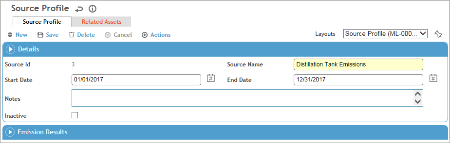
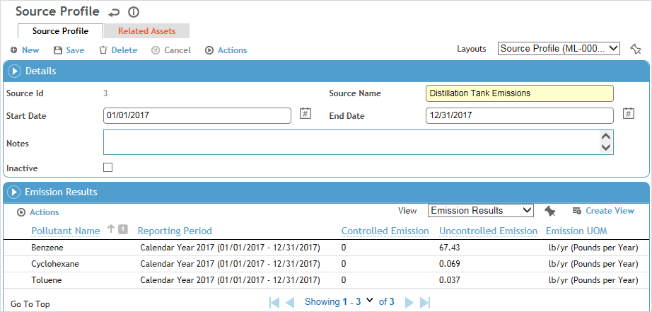

A source profile allows you to perform emission inventory calculations on a collection of assets, and use those calculations to analyze emissions from various pollution sources. Specifically, you can:
Define a collection of assets that you want to generate an emission inventory calculation for.
Use the combined record to define how emissions will be calculated based on calculation methodology for each asset.
Run speciated emission inventory calculations for controlled and uncontrolled pollutants.
Report on emission inventory calculations for a selected reporting period. The calculations will use the emission factor according to the associated asset’s location and effective date.
Inventory the emissions that result from a combustion reaction.
To create or edit a source profile:
In the Emissions Inventory menu click Source Profile.
Click a link to edit a record, or click New.

Use the Site Selector (at the top of the Emissions Inventory menu) to view just the source profiles related to a particular GDDLOFB or asset node.
On the Source Profile tab, enter a Source Name and Start Date and End Date for the profile, along with any Notes.
On the Related Assets tab, add the assets in the desired order:
Select the Air Emission Asset, the Emission Calculation Equation (from the Equation look-up table), Sequence (this defaults to the next available number if there are multiple assets already added), and the Start and End Dates (these must be within the source profile’s date range).
Select how the results should be aggregated in the Calculation Data Source field: “Stream Data” will aggregate the results using stream data speciation, while “Source Test Data” will aggregate the results using speciation of the selected Source Test Data record.
Indicate if this asset is Control Equipment. No emission calculation will be performed on this asset (see also the related bullets in step 7). If this checkbox is selected, the Emission Calculation Equation field will be cleared if an equation was previously selected.
If necessary, use the Chemical Reactions tab to capture any chemical reactions linked to the air emission asset.
Repeat step 4 as required. When all assets are added, click Save.
On the Source Profile tab, choose Actions»Generate Emission Calculation Report and select one or more reporting periods (from the ReportingPeriod look-up table). Note that this report will only include values for assets whose date range falls within the selected reporting period(s).
To delete the report for one or more period, choose Actions»Delete Emissions Calculation Report and select the period(s) that you want to delete the report for.
You can also generate (or delete) emission calculation reports for multiple selected source profiles from the Source Profile list view. Each time you generate the report for one or more records, the emissions will be recalculated
The emission calculations associated with each asset are performed and the aggregated results are shown in the Emission Results section at the bottom of the Source Profile tab.

The equations selected in the Emission Calculation Equation field for each related asset (as well as in any Intermediate Calculation UDF_FK fields, if added to a custom layout) are used to calculate the emission results. Results will be calculated for each speciated chemical.
The Controlled Emission column is calculated using the following formula:
(100 - DRE factor) / 100 * [Uncontrolled Emission value].
If an asset in the sequence is marked as Control Equipment, its DRE factor will apply to the assets that precede it in the sequence. For example, in a sequence of five assets, if assets 3 and 5 are marked as Control Equipment, asset 3’s DRE factor will be applied to assets 1 and 2, and asset 5’s DRE factor will be applied to asset 4.
If a related asset has a chemical-specific DRE factor recorded and there is no asset ahead of it in the sequence marked as Control Equipment, that factor will be used. If no DRE factor is defined, the asset factor related to the selected chemical property will be used.
The Emission UOM will be the unit of measure selected in the associated Equation look-up table record; if no unit of measure is selected, an error message will display.
If an asset includes hazards on the Chemical Reactions tab, the emissions will be organized by agent hazard and the report will only display uncontrolled emission results.
Results may be recalculated automatically via business rule actions in the following scenarios:
Updates to the source profile will recalculate the emission calculations.
Updates to the asset details will recalculate related equipment attributes, equipment UDFs, emission parameters and emission calculations.
Updates to the equipment attributes will recalculate related emission parameters, and emission calculations.
Updates to the equipment UDFs will recalculate related emission parameters, and emission calculations.
Updates to the emission parameters will recalculate related emission calculations.
Updates to the stream details will recalculate the related stream composition, emission parameters, and emission calculations.
Updates to the stream composition will update the related emission calculations.
Updates to the agent hazard details will recalculate related vapor pressure, stream composition, and emission calculations.
Updates to reporting periods will recalculate related emission calculations.
While the background table can be updated immediately by saving a related asset, you must choose Actions»Generate Emission Calculation Report again on the source profile to display updated values.
If you want to see results presented differently, e.g. for a subset of data or other criteria, use the reporting features as described in Emissions Inventory Reporting.